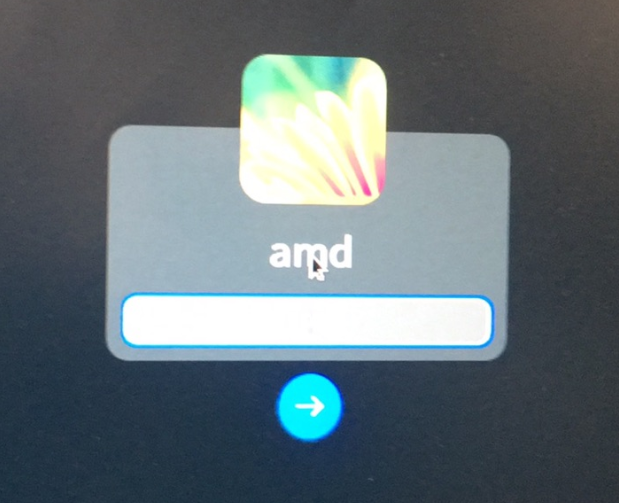
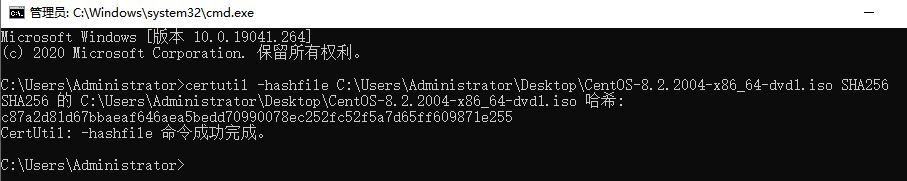
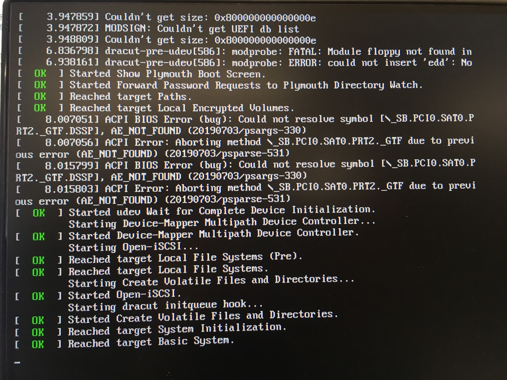
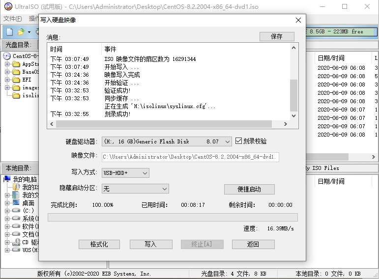
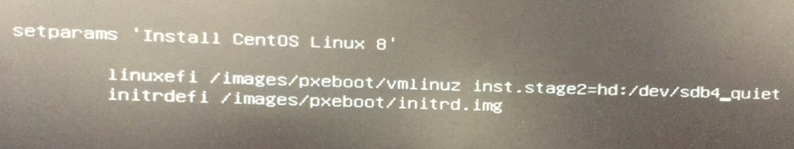
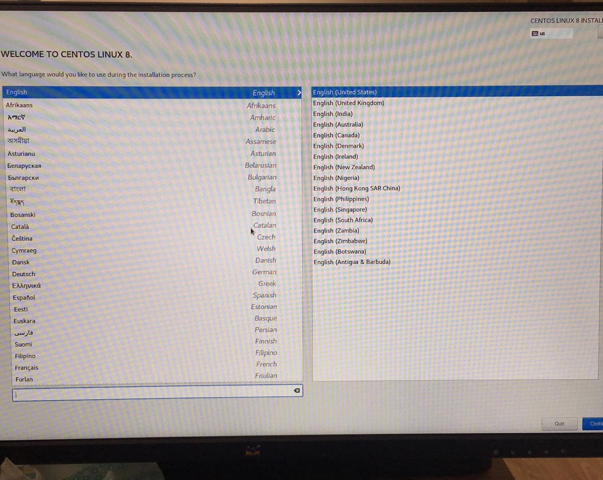
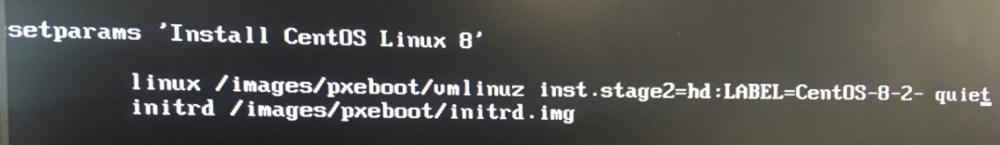
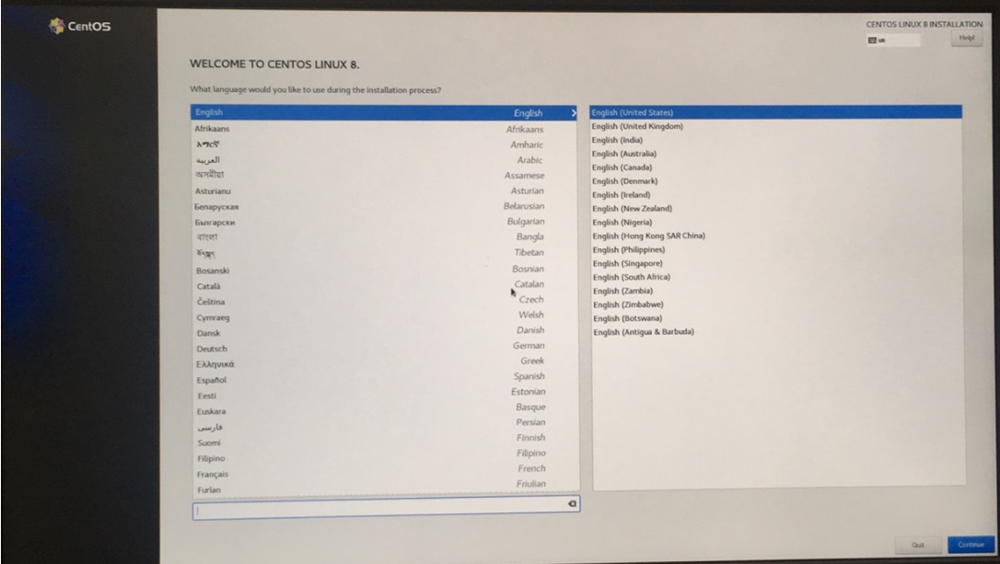

CentOS8U盘安装时无法正常进入安装界面问题根因分析🐟
一、相关术语🐟
| 缩写 | 全称 | 描述 |
|---|---|---|
| GRUB | GRand Unified Bootloader | GNU GRUB是一个来自GNU项目的多操作系统启动程序。GRUB是多启动规范的实现，它允许用户可以在计算机内同时拥有多个操作系统，并在计算机启动时选择希望运行的操作系统。 |
| UEFI | Unified Extensible Firmware Interface | 统一可扩展固件接口（UEFI）是一种个人电脑系统规格，用来定义操作系统与系统固件之间的软件界面，作为BIOS的替代方案。 |
| SHA256 | Secure Hash Algorithm | 安全散列算法（英语：Secure Hash Algorithm，缩写为SHA）是一个密码散列函数家族，是FIPS所认证的安全散列算法。 |
| ACPI | Advanced Configuration and Power Interface | 表示高级配置和电源管理接口（Advanced Configuration and Power Management Interface）。对于Windows2000，ACPI定义了Windows 2000、BIOS和系统硬件之间的新型工作接口。这些新接口包括允许Windows 2000控制电源管理和设备配置的机制。 |
二、问题概述🐟
在一次进行CentOS8微观性能测试时，发现一个问题：使用在windows10上制作的CentOS8U盘安装器在测试机上安装系统时无法正常进入安装界面。
【复现环境】
硬件环境：
测试机配置：测试机（下文中提到的测试机，均为该测试机）
| 硬件 | 型号 | 规格 |
|---|---|---|
| cpu | Intel 酷睿i3 9100F | Intel(R) Core(TM) i3-9100F CPU @ 3.60GHz (四核 / 四逻辑处理器) |
| 内存 | CT8G4DFS8266.M8FD DDR4 | 2667MHz (0.4ns) |
| 硬盘 | CT240BX500SSD1 | 240 GB |
| 显卡 | Oland [Radeon HD 8570 / R7 240/340 / R520 OEM] | 2GB |
U盘：SanDisk Cruzer Blade 1.26
软件环境：
镜像版本：CentOS-8.2.2004-x86_64-minimal.iso
制作安装器软件：UltraISO 9.7.3.3629
制作安装器软件运行平台：windows 10
【复现步骤】
1、在windows 10上，使用软件UltraISO制作一个CentOS8的U盘系统安装器；
2、在测试机上使用步骤1已制作完毕的安装器进行系统安装；
3、进入到grub界面，选择【install CentOS Linux 8】；
4、观察现象。
【问题现象】
无法正常进入图形化安装界面，停留在如下图所示的页面；

此时点击【ESC】,切换到命令行查看提示信息，如下图：

【期望】
在GRUB界面选择【install CentOS Linux 8】选项后，能够正常进入图形化安装界面。

三、问题分析🐟
使用U盘安装CentOS8系统的流程大致如下：
graph TD
A(开始)-->B(打开UltraISO并载入镜像文件)
B(打开UltraISO并载入镜像文件)-->C(插入U盘-制作U盘系统安装器)
C(插入U盘-制作U盘系统安装器)-->D(将U盘插入测试机并启动)
D(将U盘插入测试机并启动)-->E(安装CentOS系统)
E(安装CentOS系统)-->F(结束) 根据U盘安装CentOS8系统的流程图，存在以下几种因素可能会影响到系统无法正常进入图形化安装界面，如下：
- U盘本身存在问题，导致无法正常进入安装界面。
- 镜像存在问题，导致无法正常进入安装界面。
- 机器存在问题，导致无法正常进入安装界面。
- 系统启动的引导方式错误，导致无法正常进入安装界面。
- 制作U盘的软件出现错误，导致无法正常进入安装界面。
因为UOS系统也是使用的UFEI的方式启动，所以假设能够使用与安装CentOS8系统相同的环境，安装正常的UOS镜像成功，并且成功进入UOS系统桌面，则可以证明问题不是因素1、3、4、5引起的，就继续分析因素2。通过分析验证一的实验结果来判断是否可以排除因素1、3、4、5。
分析验证一：保持U盘安装CentOS8系统相同的环境下，使用U盘安装UOS系统能否成功。
【实验流程】
graph TD
A(开始) -->B(准备U盘和镜像并打开UltraISO)
B --> C(UltraISO 载入镜像)
C --> D(通过UltraISO 制作U盘系统安装器)
D --> |制作成功|E(插入测试机进行系统安装)
E --> F(启动测试机)
F --> |不满足实验期望|G(失败)
F --> |满足实验期望|I(成功)
G --> H(结束)
I --> H【实验环境】
镜像：uniontechos-device-20-gui-1010_AMD64-20200827.iso
U盘：SanDisk Cruzer Blade 1.26
测试机：测试机
U盘安装器制作软件：UltraISO
制作U盘安装器软件运行平台：windows 10
【实验设计】
实验操作：
操作1：准备系统镜像、U盘、UltraISO工具、测试机。
操作2：使用UltraISO制作U盘安装器。
操作3：使用制作好的U盘安装器安装镜像。
操作4：启动测试机，验证系统安装是否正常。
实验步骤：
操作1-->操作2-->操作3-->操作4
实验结果分析：
成功-->问题不是因素1、3、4、5引起
失败-->问题由因素1、3、4、5引起
【实验验证】
步骤一：实施操作1，将U盘插入windows10电脑，安装并运行UltraISO软件。
步骤二：实施操作2，点击UltraISO【打开】按钮，载入UOS镜像；点击【启动】-->【写入硬盘映像】-->【写入】-->【确认】；等待U盘制作完成。
步骤三：实施操作3，将U盘插入测试机并引导U盘启动，开机键入【F9】，选择U盘启动；选择安装默认项，进入系统安装界面，根据提示信息进行安装；等待安装完成。

步骤四：实施操作4 重启测试机，拔出U盘，观察能否正常进入系统。

根据实验现象，1号测试机能够正常初始化，初始化完成后，能够正常进入系统登录界面，表明实验结果为成功，则证明了问题不是因素1、3、4、5引起的。
接下来继续分析因素2，可以通过CentOS8镜像的SHA256值来校验镜像的完整性，以此来证明因素2，镜像没有错误，详细情况见分析验证二。
分析验证二：验证CentOS8镜像的SHA256值，是否与官方发布的一致。
【验证流程】
graph TD
A(开始) -->C(获取官方镜像SHA256值)
C --> D(计算本地下载镜像的SHA256值)
D --> E(比较官方与本地值)
E --> |满足实验期望|F(成功)
E --> |不满足实验期望|G(失败)
F --> H(结束)
G --> H【实验环境】
镜像文件：CentOS-8.2.2004-x86_64-dvd1.iso
比对工具：certutil -hashfile
【实验设计】
实验操作：
操作1：计算下载后CentOS8镜像文件的SHA256值。
操作2：获取官方镜像文件的SHA256值。
操作3：比较操作1的SHA256值与操作2的SHA256 值。
实验步骤：
操作1-->操作2-->操作3
实验结果分析：
成功：SHA256值一致，因素2不是引起问题的因素
失败：SHA256值不一致，因素2是引起问题的因素
【实验验证】
步骤1：实施操作1，打开cmd字符窗口，执行命令：
等待执行结果。

由上图可知计算出的SHA256的值等于c87a2d81d67bbaeaf646aea5bedd70990078ec252fc52f5a7d65ff609871e255
步骤二：实施操作2，下载官方镜像的SHA256 值文件，链接地址如下：

由上图可知官方的SHA256的值等于c87a2d81d67bbaeaf646aea5bedd70990078ec252fc52f5a7d65ff609871e255
步骤三：实施操作3，比对SHA256 值一致。
根据实验现象，官方的镜像SHA256 与本地计算出的保持一致，说明镜像文件是完整无损的，所以实验结果证明因素2也不是引起问题的因素。
根据上述两个分析实验的结果，证明了之前推测的因素1、2、3、4、5均不是引起问题的因素，那现在只能换一个思路，从CentOS8的启动流程入手，推测会不会是启动流程中间出现了错误，才导致没法正常进入安装界面呢？CentOS8的启动流程如下：
graph TD
A(第一阶段-POST加电自检)-->F(设备检查)
B(第二阶段-UEFI启动引导阶段)-->J(查找启动介质)
B(第二阶段-UEFI启动引导阶段)-->G(跳转ESP分区)
B(第二阶段-UEFI启动引导阶段)-->D(加载Bootloader)
C(第三阶段-GRUB启动引导阶段)-->H(查找/boot 识别文件系统 查找内核)
graph TD
A(第四阶段-内核加载阶段)--> C(加载内存)
A(第四阶段-内核加载阶段)--> D(探测硬件 加载硬件)
A(第四阶段-内核加载阶段)--> E(挂载 切换根文件系统)
B(第五阶段-系统初始化) -->F(启动systemd进程)
B(第五阶段-系统初始化) -->J(读取初始化文件 初始化系统) （上图只是为了概括下启动流程的各个流程的作用，启动顺序由第一阶段发起，第五阶段结束。）
总结一下，CentOS8启动大致分为以下5个阶段：
第一个阶段：POST加电自检，主要是对内部各个设备进行检查。
第二个阶段：BIOS启动引导，主要是查找启动介质，跳转EPS分区，加载BootLoader。
第三个阶段：GRUB启动引导，主要查找/boot、识别文件系统、寻找内核。
第四个阶段：内核加载，本阶段主要是将内核加载到内存，内核接管系统后，探测、加载硬件，挂载、切换根文件系统，准备进行系统初始化。
第五个阶段：系统初始化，启动 /usr/lib/systemd/systemd 进程，读取 systemd.target 进行系统运行环境初始化，读取basic.target执行基本任务等等。
根据问题的现象，在使用U盘安装CentOS8时，在grub页面选择了启动项后，界面开始黑屏，切换到操作日志界面，发现有报错信息：ACPI Error再结合启动流程图分析，目前正好处于第四阶段，本来应该去加载内核，然后内核去探测硬件、加载硬件驱动等等，但是现在却卡住，界面黑屏，并且提示dracut-pre-udev[586]:modprobe:FATAL,查询资料后可知，dracut是新一代的initramfs系统，唯一的作用是挂载rootfs，依赖udev去获取rootfs的设备节点，此时报错，并提示模块未找到等等。此时判断是因为系统没有找到启动设备，所以导致无法进入下一阶段。再根据流程图，可知第二阶段有去查找设备的操作，那现在就应该去检查一下GRUB中的启动项配置，会不会因为配置文件错误，导致了这个问题呢？
报错信息如下图：

为了检查配置文件，进入grub界面，选中【Install CentOS linux 8】选项，键入【E】键，跳转启动项配置界面，发现默认项配置中内核命令项inst.stage2指向LABEL=CentOS-8-2-2004-x86_64-dvd。现在通过修改启动项配置，键入【ctrl + x】，查看系统目前识别到的设备中有没有LABEL是CentOS-8-2-2004-x86_64-dvd。
启动项默认配置如下：

查看设备列表的启动项配置：

目前系统上已识别的设备表：

此时观察设备表，发现第八项为U盘安装器，并且LABEL列中也没有CentOS-8-2-2004-x86_64-dvd，只有CentOS-8-2-，而CentOS-8-2-正好是CentOS-8-2-2004-x86_64-dvd的前半部分，后半部分疑是被截掉了，通过UltraISO工具查看镜像的卷标确实是CentOS-8-2-2004-x86_64-dvd，那么在制作U盘安装器的过程中，卷标被保存为了CentOS-8-2-，这是为什么呢？查询相关资料得到：windows系统的卷标长度是有11个字符的限制。而卷标CentOS-8-2-2004-x86_64-dvd太长，被系统自动截取了，导致在内核命令项inst.stage2指定的LABEL没有找到，所以才出现了该问题。

根据目前的分析，可知由于windows卷标长度限制的问题，导致U盘制作成功后，卷标与实际的启动配置项中的LABLE不一致，导致了系统在内核加载阶段找不到内核启动，出现黑屏，无法进入安装界面的问题。
四、实验验证🐟
现在提供三个解决方案：
1. 方案1是通过`DEVICE`指定`sdb4`来加载内核，见实验验证1；
2. 方案2则是通过`LABEL`指定`CentOS-8-2-`来加载内核，见实验验证2；
3. 方案3则是在`linux`系统上制作U盘系统安装器，见实验验证3。
验证1：修改grub 启动项，通过DEVICE指定sdb4来加载内核。
进入grub界面，修改启动项，通过DEVICE指定sdb4来加载内核实验流程如下：
graph TD
A(开始) -->B(使用U盘启动)
B --> C(进入grub页面-修改启动项)
C --> E(使用新的配置项启动)
E --> |满足实验期望|F(成功)
E --> |不满足实验期望|G(失败)
F --> H(结束)
G --> H【实验环境】
测试机：测试机
U盘：SanDisk Cruzer Blade 1.26
U盘安装器制作软件：UltraISO
镜像：CentOS-8.2.2004-x86_64-dvd1.iso
U盘安装器运行平台：windows 10
【实验设计】
实验操作：
操作1：使用UltraISO 制作CentOS8的U盘安装器。
操作2：使用U盘启动进入grub界面。
操作3：修改启动项并执行，指定U盘路径。
操作4：执行新的启动项。
实验步骤：
操作1 --> 操作2 --> 操作3 --> 操作4
实验结果分析：
成功：正确进入系统安装界面，解决方案通过。
失败：不能进入系统安装界面，解决方案不通过。
【实验验证】
步骤1：实施操作1，UltraISO 打开镜像文件：CentOS-8.2.2004-x86_64-dvd1.iso，点击【启动】-->【写入硬盘映像】-->【写入】-->【确认】，等待U盘安装器制作完成。

步骤2：实施操作2，将制作好的U盘安装器插入1号测试机，开机时键入【F9】，选择U盘启动，进入grub界面。
步骤3：实施操作3，根据设备表可知DEVICE指定的sdb4为U盘，键入【E】进入启动项编辑界面。
修改
为

步骤4：实施操作4，键入【ctrl + x】运行。运行结果如下图：
运行结果：

此时已正确进入安装界面，证明该解决方案可以解决U盘安装CentOS8，无法进入安装界面的问题。
验证2：修改grub启动项，通过LABEL指定CentOS-8-2-来加载内核。
进入grub界面，修改启动项，通过LABEL指定CentOS-8-2-来加载内核实验流程如下：
graph TD
A(开始) -->B(使用U盘启动)
B --> C(进入grub页面-修改启动项)
C --> E(使用新的配置项启动)
E --> |满足实验期望|F(成功)
E --> |不满足实验期望|G(失败)
F --> H(结束)
G --> H【实验环境】
镜像：CentOS-8.2.2004-x86_64-dvd1.iso
U盘：SanDisk Cruzer Blade 1.26
测试机：测试机
由上文设备表，可知U盘卷标：CentOS-8-2-
【实验设计】
实验操作：
操作1：将制作好的CentOS8U盘启动器，插入测试机。
操作2：选择U盘启动。
操作3：进入grub界面，编辑启动项。
操作4：使用新的启动项进行引导。
实验步骤：
操作1-->操作2-->操作3-->操作4
实验结果分析：
成功：正确进入系统安装界面，解决方案通过。
失败：不能进入系统安装界面，解决方案不通过。
【实验验证】
步骤1：实施操作1，将制作好的CentOSU盘系统安装器，插入测试机，开启测试机，并键入【F9】，进入BIOS引导界面。
步骤2：实施操作2，在BIOS引导页面，选择【SanDisk Cruzer Blade 1.26】选项，进入grub界面。
步骤3：实施操作3，在grub界面，键入【E】，进入 启动项配置编辑页面，
修改：
为
步骤4：修改完成后，键入【ctrl + x】，使用新的U盘卷标进行引导。观察实验结果。

此时已正确进入安装界面，证明该解决方案同样可以解决U盘安装CentOS8，无法进入安装界面的问题。
验证3：在linux系统上使用dd命令制作U盘系统安装器。
在linux系统上使用dd命令制作U盘系统安装器流程如下：
graph TD
A(开始) -->B(打开终端插入U盘)
B --> C(查询U盘地址)
C --> D(写入启动引导和镜像文件)
D --> E(安装系统)
E --> |满足实验期望|F(成功)
E --> |不满足实验期望|G(失败)
F --> H(结束)
G --> H【实验环境】
镜像：CentOS-8.2.2004-x86_64-dvd1.iso
U盘：SanDisk Cruzer Blade 1.26
测试机：测试机
制作U盘安装器软件运行平台：uniontechos-device-20-cli
【实验设计】
实验操作：
操作1：打开linux终端，并将U盘插入测试机。
操作2：查询U盘的地址。
操作3：将镜像文件写入U盘。
操作4：使用新制作的U盘安装CentOS8系统。
实验步骤：
操作1-->操作2-->操作3-->操作4
实验结果分析：
成功：正确进入系统安装界面，解决方案通过。
失败：不能进入系统安装界面，解决方案不通过。
【实验验证】
步骤1：实施操作1，打开linux系统，进入终端页面，将U盘插入测试机。
步骤2：实施操作2，在终端页面执行命令sudo fdisk -l，可知/dev/sdb4 为U盘。

步骤3：实施操作3，在桌面页面执行命令sudo dd if=CentOS-8.2.2004-x86_64-dvd1.iso of=/dev/sdb。

步骤4：实施操作4，将U盘插入测试机，启动，选择U盘启动，选择【Install CentOS Linux 8】，观察实验结果。
此时正确进入安装界面，证明该解决方案同样可以解决U盘安装CentOS8，无法进入安装界面的问题。
根据上述三个实验验证，问题的根本原因是在windows上使用UltraISO 制作CentOS8U盘系统安装器的过程中，由于windows卷标的长度限制，会截断U盘的卷标，最后才导致使用CentOS8的U盘安装器安装时无法正常进入安装界面。
五、解决方案🐟
根据上述实验结果，确定使用CentOS的U盘安装时无法正常进入安装界面的问题产生，是因为在windows上使用UltraISO 制作CentOS8U盘系统安装器的过程中会截断U盘的卷标。为解决这个问题，提供三个解决方案，如下：
【解决方案一】
操作步骤：
-
.测试机插入
windows10下制作的U盘系统安装器，进入grub 界面后，键入【E】键进入启动项配置界面。 -
修改启动项中卷标
CentOS-8-2-2004-x86_64-dvd为CentOS-8-2-。 -
键入【ctrl + x】，使用新的配置项引导系统。
【解决方案二】
操作步骤：
-
测试机插入
windows下制作的U盘系统安装器，进入grub界面后，键入【E】键进入启动项配置界面，修改linuxefi /images/pxeboot/vmlinuz inst.stage2=hd:/LABEL=CentOS-8-2-2004-x86_64-dvd quiet为linuxefi /images/pxeboot/vmlinuz linux dd quiet。 -
键入【ctrl + x】，等待设备查询结果，记录U盘所在目录：
/dev/sdb4。 -
重启计算机，U盘启动，进入grub界面，键入【E】键进入启动项配置界面，修改
linuxefi /images/pxeboot/vmlinuz inst.stage2=hd:/LABEL=CentOS-8-2-2004-x86_64-dvd quiet为linuxefi /images/pxeboot/vmlinuz inst.stage2=hd:/dev/sdb4 quiet。 -
键入【ctrl + x】，使用新的配置项引导系统。
【解决方案三】
操作步骤：
- 进入
linux终端页面，并插入U盘后，执行命令sudo fdisk -l查询U盘地址。 - 记录U盘地址，执行命令
sudo mkfs.ext4 /dev/sdb4格式化U盘。 - 格式化U盘完成后，执行命令
sudo dd of=/images/CentOS-8.2.2004-x86_64-dvd1.iso if=/dev/sdb bs=2M制作U盘系统安装器。 - 将U盘插入测试机，启动，选择U盘启动，选择【Install CentOS Linux 8】。
解决方案的优劣比较
| 解决方案编号 | 适用场景 | 优势 | 劣势 |
|---|---|---|---|
| 1 | 已在windows10上制作U盘安装器 |
步骤相对较少，耗时短 | 无法自动进入安装界面 |
| 2 | 已在windows10上制作U盘安装器 |
泛用性高，不受卷标限制 | 无法自动进入安装界面，步骤繁杂 |
| 3 | 未制作U盘安装器 | 自动进入安装界面 | 耗时较长，且未验证镜像完整性 |
综上所述，最优的解决方案是方案1：修改grub启动项，通过LABEL指定的CentOS-8-2-来加载内核。当然在没有制作U盘安装器时，在linux系统上使用DD命令制作CentOS8的U盘安装器能够避免该问题的出现。
六、小结🐟
- 问题总结：
在测试机上使用U盘安装CentOS8时无法进入安装界面的问题，是因为在windows上使用UltraISO 制作CentOS8U盘系统安装器的过程中会截断U盘的卷标，在使用U盘安装CentOS8时，安装启动项的默认配置LABEL指定的名称与U盘的LABEL并不匹配，导致了没有找到启动介质，在启动内核加载的阶段，无法加载内核，所以不能正常进入安装界面。解决问题的关键步骤是重新修改了grub里面的LABEL默认启动项，重新指定内核目录。
- 最优解：
提供了三种解决方案，如果是还没有制作U盘启动器，推荐方案3，避免无法正常进入安装界面问题的出现；如果已经在windows10上制作了U盘启动器，推荐方案1。
- 进阶方案：
可知问题出现的原因是镜像的自带卷标太长，可以通过拆解镜像包的方式，修改卷标和启动项配置文件中卷标为CentOS8，再重新打包，使用新包制作U盘启动器，在安装时就能自动进入安装界面。
- 收获与启示：
启示：分析问题的时候，应该尽可能的去列举它的产生因素。根据问题的因素去设计相关的验证方法，尽快排除无关因素。遇到棘手的问题，应该从多个角度去了解它背后的知识，有助于我们从多个方向去解决它。
收获：windows系统的卷标长度是有11个字符的限制，linux系统对卷标长度没有限制。以后在制作U盘安装器的时候也要关注一下卷标的长度，尽量使用在linux上制作U盘系统安装器，以此来规避类似的问题。